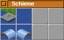
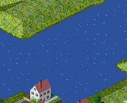
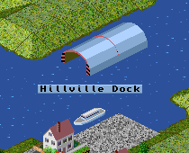

Häfen können an jedem geraden Ufer gebaut werden. Es muß also ein Stück Ufer neben einem ganzen Feld Wasser liegen. Um einen Hafen zu bauen wählt man das Hafenbauwerkzeug (links oben) und klickt auf ein entsprechendes Stück Ufer. Dort entsteht dann ein schmalerer Hafen, der (wie in dem Beispiel unten) beliebig verbreitert werden kann.
|  |  |
von Hansjörg Malthaner
EMail: hansjoerg.malthaner@gmx.net